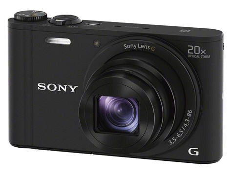

Thông tin chung Hãng sản xuất : Sony W Series Độ lớn màn hình LCD (inch) : 3.0 inch Màu sắc : Đen Trọng lượng Camera : 137g Kích cỡ máy (Dimensions) : 96.0 x 54.9 x 25.7mm Loại thẻ nhớ • Memory Stick Duo (MSD) • Secure Digital Card (SD) • SD High Capacity (SDHC)